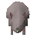

Dungeon rat

| Config name | dungeon_rat |
| NPC id | 88 |
| Combat level | 12 |
| Hitpoints | 12 |
| Attack / Strength / Defence | 10 / 10 / 10 |
| Respawn | 50 ticks |
| Options | Attack |
| Aggression | cowardly |
| Wander range | 6 tiles from spawn |
| Max range | 8 tiles from spawn |
| Defined in | scripts/_unpack/225/all.npc |
Dungeon rat
Overgrown vermin.
Show all 7 spawns on the world map → Open in knowledge graph →
Drops
No drops recorded.
Locations
| Area | Coordinates | Level | Count | Map |
|---|---|---|---|---|
| Battlefield (underground) | 2573, 9630 | 0 | 1 | view |
| East Ardougne (underground) | 2577, 9692 | 0 | 1 | view |
| Fishing Guild (underground) | 2580, 9804 | 0 | 1 | view |
| Fishing Guild (underground) | 2585, 9801 | 0 | 1 | view |
| Fishing Guild (underground) | 2588, 9806 | 0 | 1 | view |
| Fishing Guild (underground) | 2594, 9803 | 0 | 1 | view |
| Fishing Guild (underground) | 2601, 9801 | 0 | 1 | view |